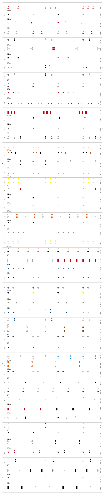
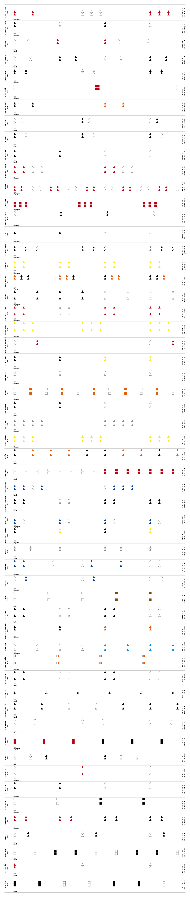

ESPAÑOL
 ENGLISH
ENGLISH
ENGLISH

All the lighthouses of the peruvian coast is part of the Irradia project, a joint initiative of MALI and the Fundación Telefónica Movistar to promote the use of digital means of production as encouragement for artistic creation. Todos los faros de la costa peruana forma parte del proyecto Irradia, una iniciativa conjunta del MALI y la Fundación Telefónica Movistar para promover la utilización de los medios de producción digital como estímulo para la creación artística.
ALL THE
LIGHTHOUSES OF THE
PERUVIAN COASTTODOS LOS
FAROS DE LA COSTA
PERUANA
Luz María Bedoya
To receive alerts every time new content of the project is published, enter your email here: Para recibir alertas cada vez que se publique nuevo contenido del proyecto, ingresa tu correo aquí:
 1
1
PRESENTATIONPRESENTACIÓN
PRESENTATIONPRESENTACIÓN
All the Lighthouses of the Peruvian Coast is a multidisciplinary project that explores the relationships between navigation, sound and writing. Todos los faros de la costa peruana es un proyecto multidisciplinar que explora las relaciones entre navegación, sonido y escritura.
Based on the lighting and structural characteristics of the 56 lighthouses deployed along the 3,000 kilometers of the Peruvian coast, Luz María Bedoya has created a graphic score to be freely interpreted by various musicians. It is a score of open notations that assumes the indeterminacy of experimental music. Along with this, the artist has invited several authors to elaborate a text inspired by specific concepts of the nautical language, which lead to reflections on music, navigation, the body and the present moment in the still diffuse post-Covid 19 world order. All the Llighthouses of the Peruvian Coast thus forms a network of notational systems capable of mutually feeding back and diverting each other. A partir de las características lumínicas y estructurales de los 56 faros desplegados a lo largo de los 3,000 kilómetros del litoral peruano, Luz María Bedoya ha creado una partitura gráfica para ser interpretada libremente por diversos músicos. Se trata de una partitura de notaciones abiertas que asume la indeterminación de la música experimental. Junto a ello, la artista ha invitado a varios autores a elaborar un texto inspirado en conceptos específicos del lenguaje náutico, los cuales conducen a reflexiones sobre música, navegación, cuerpo y el momento presente en el aún difuso orden mundial post-Covid 19.
This website is a repository of the graphic score creation process. It also houses the sound pieces performed by the musicians and the texts recorded by their authors in a series of podcasts. Both the sound performances and the podcasts will be published periodically on this platform. Esta página web es un repositorio del proceso de creación de la partitura gráfica. También alberga las piezas sonoras interpretadas por los músicos y los textos grabados por sus autores en una serie de podcasts. Tanto las interpretaciones sonoras como los podcasts serán publicados periódicamente en esta plataforma.
This digital presentation of All The Lighthouses of the Peruvian Coast will be accompanied by a physical installation as well as live performances when sanitary conditions for the public are guaranteed. Esta entrega digital de Todos los faros de la costa peruana será acompañada por una instalación física además de presentaciones en vivo cuando las condiciones sanitarias para el público se encuentren garantizadas.
- Anne Carson
- Gabriela Ezeta
- José Ignacio Padilla
- Lucia Castello Branco
- Macri Cáceres
- Orieta Chrem
- Paruro [Danny Caballero]
- Peter Szsendy
- Safaa Fathy
- Santiago Pillado
- Santiago Vera
- Teté Leguía
- Vered Engelhard
All the lighthouses of the peruvian coast is part of the Irradia project, a joint initiative of MALI and the Fundación Telefónica Movistar to promote the use of digital means of production as encouragement for artistic creation. Todos los faros de la costa peruana forma parte del proyecto Irradia, una iniciativa conjunta del MALI y la Fundación Telefónica Movistar para promover la utilización de los medios de producción digital como estímulo para la creación artística.
ALL THE
LIGHTHOUSES OF THE
PERUVIAN COASTTODOS LOS
FAROS DE LA COSTA
PERUANA
Luz María Bedoya
To receive alerts every time new content of the project is published, enter your email here: Para recibir alertas cada vez que se publique nuevo contenido del proyecto, ingresa tu correo aquí:
 2
2
SOUND PIECESPIEZAS SONORAS
SOUND PIECESPIEZAS SONORAS
Various artists have been invited to interpret the score All the Lighthouses of the Peruvian Coast. Since March 2020 they have been exploring the sonic possibilities of these notations to develop the experimental pieces presented here. Diversos artistas han sido invitados para interpretar la partitura Todos los faros de la costa peruana. Desde marzo de 2020 ellos vienen explorando las posibilidades sonoras de estas notaciones para desarrollar las piezas experimentales aquí presentadas.
Vocal improvisation, electronic noise, soundscape and performative mapping of the body concur in the performances. The exploration space includes the use of multiple instruments and objects. Double basses, flutes, drums, pututos (ceremonial trumpets), waterphones, steel drums, quartz bowls, oscillators, stones and bells are used in the pieces according to different treatments. En las interpretaciones concurren la improvisación vocal, la electrónica ruidista, el paisaje sonoro y el mapeo performático del cuerpo. El espacio de exploración incluye el uso de múltiples instrumentos y objetos. Contrabajos, flautas, baterías, pututos, aguáfonos, steel drums, cuencos de cuarzo, osciladores, piedras y campanas son empleados en las piezas según distintos tratamientos.
Broadcast program Programa de publicación
- 19.03.21 Gabriela Ezeta
- 26.03.21 Teté Leguía
- 09.04.21 Macri Cáceres
- 23.04.21 Vered Engelhard
- 07.05.21 Santiago Pillado-Matheu
- 21.05.21 Orieta Chrem
- 04.06.21 Paruro
All the lighthouses of the peruvian coast is part of the Irradia project, a joint initiative of MALI and the Fundación Telefónica Movistar to promote the use of digital means of production as encouragement for artistic creation. Todos los faros de la costa peruana forma parte del proyecto Irradia, una iniciativa conjunta del MALI y la Fundación Telefónica Movistar para promover la utilización de los medios de producción digital como estímulo para la creación artística.
ALL THE
LIGHTHOUSES OF THE
PERUVIAN COASTTODOS LOS
FAROS DE LA COSTA
PERUANA
Luz María Bedoya
To receive alerts every time new content of the project is published, enter your email here: Para recibir alertas cada vez que se publique nuevo contenido del proyecto, ingresa tu correo aquí:
3
PODCASTS
PODCASTS
As part of the public program of All the Lighthouses of the Peruvian Coast different authors were invited to write and record a text inspired by certain specific concepts of the nautical language. The proposal seeks to extend the meanings of this terminology beyond the limits of navigation and to promote multiple poetic and interpretative drifts. Como parte del programa público de Todos los faros de la costa peruana se invitó a distintos autores a escribir y grabar un texto inspirado en ciertos conceptos específicos del lenguaje de la navegación. La propuesta busca extender las acepciones de esta terminología más allá de los límites de la náutica y propiciar múltiples derivas poéticas e interpretativas.
Broadcast program Programa de publicación
- 19.03.21 Lubber lineLínea de fe
- 31.03.21 Tilt and driftAbatimiento y deriva
- 16.04.21 Blind signalSeñal ciega
- 30.04.21 True bearingDemora verdadera
- 14.05.21 Tracing the trackTrazado de la derrota
- 28.05.21 Compensation of deviationsCompensación de los desvíos
All the lighthouses of the peruvian coast is part of the Irradia project, a joint initiative of MALI and the Fundación Telefónica Movistar to promote the use of digital means of production as encouragement for artistic creation. Todos los faros de la costa peruana forma parte del proyecto Irradia, una iniciativa conjunta del MALI y la Fundación Telefónica Movistar para promover la utilización de los medios de producción digital como estímulo para la creación artística.
ALL THE
LIGHTHOUSES OF THE
PERUVIAN COASTTODOS LOS
FAROS DE LA COSTA
PERUANA
Luz María Bedoya
To receive alerts every time new content of the project is published, enter your email here: Para recibir alertas cada vez que se publique nuevo contenido del proyecto, ingresa tu correo aquí:
4
SCOREPARTITURA
SCOREPARTITURA
All the Lighthouses of the Peruvian Coast is a modular graphic score composed of 56 sections. The notations of each module originate from the lighting and structural characteristics of the 56 lighthouses on the coast. The individual codes of the lighthouses result in variations that, in succession, evoke the physical-geographical peculiarities that exist along this strip. Representing a coastline punctuated with a string of lighthouses, the score is a concatenation of graphics, markings and instructions that return us to those lighthouses as a source. Todos los faros de la costa peruana es una partitura gráfica modular compuesta por 56 secciones. Las notaciones de cada módulo tienen como origen las características lumínicas y estructurales de los 56 faros dispuestos en el litoral. Los códigos individuales de los faros resultan en variaciones que, en sucesión, evocan las peculiaridades físico-geográficas existentes a lo largo de dicha franja. Si la costa es una línea plagada de faros, esta partitura es una concatenación de gráficos, marcas e instrucciones que nos devuelve a esos faros como fuente.
InstructionsInstrucciones
- 1. For any object, instrument or voice. 1. Para cualquier objeto, instrumento o voz.
- 2. Before starting the piece, the players are free to choose a combination of any two simultaneous sounds to which they can return to at any point in the piece, if they so desire. 2. Antes de empezar la pieza, el intérprete tiene la opción de elegir una combinación de dos sonidos simultáneos a la que podrá volver en cualquier punto de la pieza si es que lo desea.
- 3. The interpretation of this score can begin with any of the modules, discarding one or more, or repeating some others at will. It can also be interpreted with several or all of them simultaneously. 3. La interpretación de esta partitura puede comenzar por cualquiera de los módulos, descartar uno o varios, o repetir algún otro a voluntad. También puede interpretarse varios módulos o todos ellos de manera simultánea.
- 4. In each module, the aural ideas are expressed and then followed by periods of silence: 4. En cada módulo se despliegan ideas sonoras seguidas por silencios:


- Aural ideas can be the clean sounds of an instrument or voice, or some other configuration of sounds. The name “aural ideas” rather than the word “sounds” has been used to underline that these are configurations —mixes, noises— and not just musical notes. Ideas sonoras pueden ser sonidos limpios de un instrumento o voz, o también alguna configuración de sonidos. Se ha empleado el nombre “ideas sonoras”, y no la palabra “sonidos”, para subrayar que se trata de configuraciones —mezclas, ruidos— y no solamente de notas musicales.
- Silences are indicated by the blank space immediately following the aural ideas. Los silencios están indicados por el espacio en blanco inmediatamente consecutivo a las ideas sonoras.
- 5. The colors mark changes in the character of the performance and / or freely chosen techniques. 5. Los colores marcan cambios de carácter de la interpretación y/o de técnica a libre elección.
- 6. The position of aural ideas defines their pitch. If they are located at the top of the module, they are expected to be higher. The reverse happens if they are located at the bottom where they should be lower. Each module generally incorporates the notation for duplicated aural ideas at two levels. During the performance these can be alternated and combined. The player can also choose to use one or the other interchangeably. 6. La posición de las ideas sonoras define su altura tonal. Si se ubican en la parte superior del módulo, se espera que sean más agudas. Sucede lo inverso si se ubican en la parte inferior, cuando deben ser más graves. Por lo general cada módulo incorpora la notación de las ideas sonoras duplicadas en dos niveles. Durante la interpretación estas pueden alternarse y combinarse; también puede elegirse emplear una u otra indistintamente.
- 7. Volume is indicated by short lines located at the beginning of each module: 7. El volumen está indicado por líneas cortas ubicadas al inicio de cada módulo:


- It is optional whether to maintain the volume indicated at the beginning of each module or to reduce it gradually as the end approaches. Es opcional sostener el volumen indicado al inicio de cada módulo o reducirlo paulatinamente conforme se acerca el final.
- 8. The tempo is marked at the beginning of each module. There are five speeds: very slow, slow, moderate, fast, very fast. 8. El tempo está señalado al inicio de cada módulo. Existen cinco velocidades: muy lento, lento, moderado, rápido, muy rápido.
- 9. The total duration of the piece is unlimited. 9. La duración total de la pieza es libre.
 

All the lighthouses of the peruvian coast is part of the Irradia project, a joint initiative of MALI and the Fundación Telefónica Movistar to promote the use of digital means of production as encouragement for artistic creation. Todos los faros de la costa peruana forma parte del proyecto Irradia, una iniciativa conjunta del MALI y la Fundación Telefónica Movistar para promover la utilización de los medios de producción digital como estímulo para la creación artística.
ALL THE
LIGHTHOUSES OF THE
PERUVIAN COASTTODOS LOS
FAROS DE LA COSTA
PERUANA
Luz María Bedoya
To receive alerts every time new content of the project is published, enter your email here: Para recibir alertas cada vez que se publique nuevo contenido del proyecto, ingresa tu correo aquí:
 5
5
LIGHTHOUSES LISTLISTA DE FAROS
LIGHTHOUSES LISTLISTA DE FAROS
The maritime lighthouses are light signals strung along the coast. The function of each is to guide navigators with its own simple but effective code. This guidance takes place during daylight hours as well as at night. During daylight hours, these lighthouses distinguish themselves by their physical appearance, during the hours of darkness, their beacons create their particular identities. Currently 56 lighthouses built between 1928 and 2008 punctuate the coast of Peru. Los faros marítimos son señales luminosas encadenadas en el litoral. Cada uno de ellos posee un código propio, simple pero efectivo, cuya función es orientar a los navegantes. La guía acontece en horas de día como en el lapso de noche. En la claridad los faros se diferencian unos de otros por su apariencia física; en la oscuridad se identifican por su tipo de luz. Actualmente la costa del Perú está puntuada por 56 faros construidos entre 1928 y 2008.
All the lighthouses of the peruvian coast is part of the Irradia project, a joint initiative of MALI and the Fundación Telefónica Movistar to promote the use of digital means of production as encouragement for artistic creation. Todos los faros de la costa peruana forma parte del proyecto Irradia, una iniciativa conjunta del MALI y la Fundación Telefónica Movistar para promover la utilización de los medios de producción digital como estímulo para la creación artística.
ALL THE
LIGHTHOUSES OF THE
PERUVIAN COASTTODOS LOS
FAROS DE LA COSTA
PERUANA
Luz María Bedoya
To receive alerts every time new content of the project is published, enter your email here: Para recibir alertas cada vez que se publique nuevo contenido del proyecto, ingresa tu correo aquí:
6
PROCESSPROCESO
PROCESSPROCESO
Each of the 56 lighthouses on the Peruvian coast has its own unique physical and operational characteristics. These can be the colors and design of the tower, period of illumination, visual range, intensity and focal height of the beacon. These characteristics have been re-coded in order to compose the graphic score All the Lighthouses of the Peruvian Coast made up of 56 modules. According to a system of correspondences that go from calculation to indeterminacy, it is a search to delineate musical parameters of open interpretation. Cada uno de los 56 faros de la costa peruana posee características físicas y operativas singulares: colores y diseño de la torre, periodo lumínico, alcance visual, intensidad y altura focales. Estas características han sido recodificadas para componer la partitura gráfica Todos los faros de la costa peruana formada por 56 módulos. Según un sistema de correspondencias que transitan del cálculo a la indeterminación se busca delinear parámetros musicales de interpretación abierta.
The luminous power of a lighthouse beacon is expressed in candelas. In the score the candelas have been transformed into the intensity of sound. The volume designated in each module will be louder or softer depending on the number of candelas emanating from the lighthouse to which the respective module refers. La potencia luminosa de un faro se expresa en candelas (cd). En la partitura la potencia luminosa se ha transformado en la intensidad del sonido. El volumen designado en cada módulo será más fuerte o más suave dependiendo de la cantidad de candelas emanadas del faro al que el módulo respectivo remite.
VOLUMEVOLUMEN
The focal height of a lighthouse beacon is indicated in meters above sea level and corresponds to the vertical distance between the ground level and the top of the light structure. In the score the focal height has been transformed through the interpretation of the tempo. Lighthouses with a lower focal height are interpreted at a faster tempo, while lighthouses with a higher focal height are interpreted at a slower tempo. La altura focal de un faro se indica en metros sobre el nivel del mar y corresponde a la distancia vertical entre el nivel del terreno y la parte superior de la estructura luminosa. En la partitura la altura focal ha sido transformada en el tempo de interpretación. Los faros con menor altura focal se interpretan con un tempo más rápido mientras que los faros con mayor altura focal se interpretan con un tempo más lento.
TEMPOTEMPO
The period is the interval of time, measured in seconds, between the commencement of two identical successive cycles of the flash of light (L.) and the moment of eclipse (Ecl.). In the score, the period has been transformed into rhythm and is expressed in the alternation of aural ideas and the intervals of silence that follow. The duration of the flashes of light determines the extent of the aural ideas. The blank spaces between the aural ideas respond to the times of eclipse and indicate the silences in the score. El periodo de un faro es un intervalo de tiempo, medido en segundos, entre el inicio de dos secuencias idénticas de destellos de luz (L.) y momentos de eclipse (Ecl.). En la partitura el periodo se ha transformado en ritmo y se expresa en la alternancia de ideas sonoras y los intervalos de silencio que les siguen. La duración de los destellos de luz determina la extensión de las ideas sonoras. Los espacios en blanco entre las ideas sonoras responden a los tiempos de eclipse y señalan los silencios en la partitura.
Short aural ideaIdea sonora corta
Medium aural ideaIdea sonora media
Long aural ideaIdea sonora larga
All lighthouses have two types of ranges estimated in nautical miles: a nominal range and a geographic range. The nominal range corresponds to the maximum distance within which the brightness of a beacon is perceptible in a homogeneous atmosphere. Geographic range indicates the maximum visibility distance of a lighthouse during the day and is subject to configuration and disruptions in the terrain as well as the relative heights of the observer and the lighthouse. The range of the beacons gives rise to the tones of aural ideas. Each module incorporates the notation of these aural ideas duplicated in both levels to evoke the two types of ranges. Eventually a module will present its aural construct displayed on a single level when the nominal and geographical ranges of the corresponding lighthouse coincide. Todos los faros cuentan con dos tipos de alcances estimados en millas náuticas: un alcance nominal y un alcance geográfico. El alcance nominal corresponde a la distancia máxima dentro de la cual la luminosidad de un faro es perceptible en una atmósfera homogénea. El alcance geográfico indica la distancia máxima de visibilidad de un faro durante el día y está sujeto a la configuración y las interrupciones del terreno así como a las alturas relativas del observador y el faro. Los alcances de los faros dan lugar a los tonos de las ideas sonoras. Cada módulo incorpora la notación de estas ideas sonoras duplicadas en ambos niveles para evocar los dos tipos de alcances. Eventualmente algún módulo presentará las ideas sonoras desplegadas en un solo nivel cuando los alcances nominal y geográfico del faro correspondiente coincidan.
TONETONO
Every module in the score contains a series of aural ideas*
represented by geometric shapes (,
,
 ). The colors of aural ideas coincide in each module with the
colors of the lighthouse tower to which they allude, those colors
mark the character of the performance. Each interpreter defines at
will the character of each color in the score.
Todos los módulos de la partitura contienen una serie de ideas
sonoras* representadas por formas geométricas (,
,
). Los colores de las ideas sonoras coinciden en cada módulo con
los colores de la torre del faro al que aluden, dichos colores
marcan el carácter de la interpretación. Cada intérprete define a
voluntad el carácter propio de cada color en la partitura.
). The colors of aural ideas coincide in each module with the
colors of the lighthouse tower to which they allude, those colors
mark the character of the performance. Each interpreter defines at
will the character of each color in the score.
Todos los módulos de la partitura contienen una serie de ideas
sonoras* representadas por formas geométricas (,
,
). Los colores de las ideas sonoras coinciden en cada módulo con
los colores de la torre del faro al que aluden, dichos colores
marcan el carácter de la interpretación. Cada intérprete define a
voluntad el carácter propio de cada color en la partitura.
* Aural ideas can be the clean sounds of an instrument or voice, or some other configuration of sounds. The name “aural ideas” rather than the word “sounds” has been used to underline that these are configurations —mixes, noises— and not just musical notes. * Ideas sonoras pueden ser sonidos limpios de un instrumento o voz, o también alguna configuración de sonidos. Se ha empleado el nombre “ideas sonoras”, y no la palabra “sonidos”, para subrayar que se trata de configuraciones —mezclas, ruidos— y no solamente de notas musicales.
CHARACTERCARACTER
All the lighthouses of the peruvian coast is part of the Irradia project, a joint initiative of MALI and the Fundación Telefónica Movistar to promote the use of digital means of production as encouragement for artistic creation. Todos los faros de la costa peruana forma parte del proyecto Irradia, una iniciativa conjunta del MALI y la Fundación Telefónica Movistar para promover la utilización de los medios de producción digital como estímulo para la creación artística.
ALL THE
LIGHTHOUSES OF THE
PERUVIAN COASTTODOS LOS
FAROS DE LA COSTA
PERUANA
Luz María Bedoya
To receive alerts every time new content of the project is published, enter your email here: Para recibir alertas cada vez que se publique nuevo contenido del proyecto, ingresa tu correo aquí:
7
CREDITSCRÉDITOS
CREDITSCRÉDITOS
In 2019, the Lima Art Museum (MALI) and Fundación Telefónica Movistar joined forces and launched their renewed collaboration with the development of Irradia, a project that seeks to promote contemporary Peruvian creation in experimental media, while promoting the use of new technologies in the creative process. The project entails three main programs: art+technology, art+public space and art+education.En 2019, el Museo de Arte de Lima (MALI) y Fundación Telefónica Movistar se unieron y pusieron en marcha su renovada colaboración con el desarrollo del proyecto Irradia cuyo objetivo es el de promover la creación contemporánea peruana en formatos experimentales y a la vez impulsar el uso de nuevas tecnologías en el proceso creativo. La organización del proyecto gira en torno a tres ejes: arte+tecnología, arte+espacio público y arte+educación.
- General production Producción general
- ESPACIO FUNDACIÓN TELEFÓNICA
- Elizabeth Galdo Marin
- Lucía García de Polavieja
- Reina Jara
- Omar Lavalle
- Jose Carlos Goytizolo
- Juanita Gabriel
- Museo de Arte de Lima - MALI
- Sairah Espinoza
- Sharon Lerner
- José Carlos Mariátegui
- Patricia Villanueva
- Web design Diseño web
- Michael Prado
- Web programming Programación web
- Lucuma Labs
- Podcasts production Producción podcasts
- Renzo Belón
- Musical advisory & Podcasts sound landscape Asesoría musical & Paisaje sonoro podcasts
- Teté Leguía
- Locution Locución
- Micky Bane
- Layout Diagramación
- Natalia Revilla
- Photography of lighthouses Fotografía de faros
- José Balta
- Translations Traducciones
- Julia Branco
- Max Hernández Calvo
- Denisse Martínez
- Robin Myers
- Servidioma
AcknowledgmentsAgradecimientos: Gabriel Acevedo, Luis Alvarado, Nicole Aragi, Antoinette Arévalo, Richi Balarezo, María Balarín, José Balta, Micky Bane, Ralph Bauer, Augusto Bedoya, Juan Enrique Bedoya, Rodrigo Bedoya, Renzo Belón, Laura Benetti, Luz María Bouroncle, Julia Branco, Macri Cáceres, Anne Carson, Lucia Castello Branco, Judith Changa, Orieta Chrem, Robert Currie, Felipe Cussen, Paulo Dam, Humberto Delgado, Vered Engelhard, Rafael Espinosa, Sairah Espinoza, Gabriela Ezeta, Safaa Fathy, Charles Fonlupt, Melanie Gallagher, Flavia Gandolfo, Berenice González, José Carlos Goytisolo, Lucía García de Polavieja, Pablo Hare, Max Hernández Calvo, Blas Lafferranderie, Julián Lafferranderie, Mirko Lauer, Omar Lavalle, Teté Leguía, Sharon Lerner, Miguel A. López, José Carlos Mariátegui, Benjamin Mayer Foulkes, Yuvissa Mijulovich, Carolina Moreno, Samantha Muñoz, Robin Myers, Jorge Ortiz Sotelo, Phoebe Osborne, José Ignacio Padilla, Paruro [Danny Caballero], Santiago Pillado-Matheu, Michael Prado, Salvador Prado, Ignacio Prudencio, Nicole Remy, Natalia Revilla, Diego Rodríguez-Arnaiz, Juan Salas, Janine Soenens, Maya Solovej, Peter Szendy, Mariana Tschudi, Luis Velito, Rodrigo Vera, Santiago Vera, Camila Villa, Patricia Villanueva, Luisa Yupa, Verónica Zondek
All the lighthouses of the peruvian coast is part of the Irradia project, a joint initiative of MALI and the Fundación Telefónica Movistar to promote the use of digital means of production as encouragement for artistic creation. Todos los faros de la costa peruana forma parte del proyecto Irradia, una iniciativa conjunta del MALI y la Fundación Telefónica Movistar para promover la utilización de los medios de producción digital como estímulo para la creación artística.
ALL THE
LIGHTHOUSES OF THE
PERUVIAN COASTTODOS LOS
FAROS DE LA COSTA
PERUANA
Luz María Bedoya
To receive alerts every time new content of the project is published, enter your email here: Para recibir alertas cada vez que se publique nuevo contenido del proyecto, ingresa tu correo aquí: